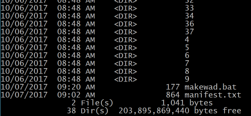
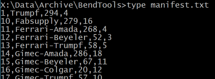
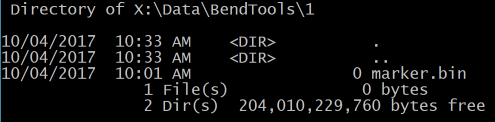
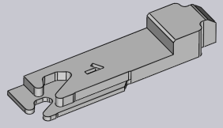

1011FluxDatafolder
product: flux org: metamation tags: [metamation, knowledge-base, flux, notes, legacy, dev] type: note project: Flux source: Notes/Dev/1011.FluxDatafolder.ftx updated: 2026-07-13
1011 ◉ The Flux Data Folder
[!info]- Revision history
Rev Date Author Note V1 2017-10-06 AV
This document explains the layout of the Flux Data folder. This folder contains two kinds of data - immutable (read-only) data, and data that is modified as Flux runs. Here, we look at the various sub-folders inside the Data folder, and about how common operations like installing machines, installing bend-tool catalogs are carried out.
Bend tool catalogs
Flux ships with a few dozen bend-tool catalogs, which are mostly mapped to actual catalogs of bend tools published by various manufacturers. Some of these are machine manufacturers like Trumpf or Amada, while others are specialist companies that just make bend tools (like Wila or Rolleri).
Like a lot of data in Flux, the representation of Bend Tools on developer machines is different from how it is in an customer Flux installation. On developer machines, we typically will have an unpacked version that is more friendly for editing and primarily for checking into a revision control system (thus, text files are preferred over binary).
On end-user installs, we are more interested in the most compact representation, so the data is usually Zipped (this also has the side effect of preventing end-users from casually inspecting and inadvertently editing the data).
On developer machines
On developer machines, each of the bend tool catalogs is stored in a sub-folder off Data/Archive/BendTools, and these folders have names that are simply the IDs of the tool catalogs.

Within each of the numbered folders in the image above there is just one bendtools.curl file, that contains a single BToolLibrary object. In addition to these individual catalogs, there is a manifest.txt file in the root folder that looks like this:

This simply lists the name of the tool catalog, the number of tools and the revision number, and is used to quickly populate the Bend Tool Catalog editor (without having to load all the BToolLibrary objects).
In Flux installs
The entire BendTools folder is zipped into a single BendTools.wad1 file, which you can see in the first image above (this also includes the manifest.txt file). This is the only file that is installed, and it is in the Bin folder, alongside Flux.exe.
Installing a bend-tool catalog
The Data/Archive/BendTools folder (or the BendTools.wad) contains a few dozen bend-tool catalogs. However, only a few of them are typically installed in a customer's installation. When Flux ships, we ship with only the Trumpf catalog installed by default, but the user can install additional catalogs (or un-installed some installed ones) by using the Database icon.
The installed catalogs are stored in the Data/BendTools folder, and there is a sub-folder (with the catalog ID as name) for each of the catalogs that is installed. Within that folder, we do not actually copy the BendTools.curl file from the wad - that would be an unncessary duplication of data, since that file can never be modified. Instead, we just place a marker.

This marker simply indicates Bend-tools Catalog 1 is installed. The actual data is always feched from the archive (Data/Archive/BendTools on developer machines, BendTools.wad on customer installations). Thus the act of installing a bend-tool catalog is as simple as creating a sub-folder in Data/BendTools and placing a marker.bin file in there.
Why do we even need a sub-folder in this case? Because the user will most often modify the inventory of this tool catalog, specifying the actual punches and dies they own, and their segmentation quantities. This information is stored in that folder, in an inventory.curl file. Unlike the bendtools.curl file itself, this is a read-write file, since the user will edit it.
Machines
The machine data is stored in an analogous fashion. On developer machines, each potential machine is stored in a sub-folder of Data/Archive/Machines, and this sub-folder has the same name as the machine ID. On a customer installation, the entire set of machines is packed into a single Machines.wad file that is stored alongside the Flux.exe file.
When a machine is installed, we create a folder with the machine-ID inside the Data/Machine folder, and just place a marker.bin file in there. Other files will soon join this file in this folder - when the user edits the settings for this machine, a settings.curl file is created there. When the user edits the available options for this machine (is a bend-guard installed, is a support-table installed etc), those options are stored in the options.ini etc. However, the actual data for the machine is always fetched from the Data/Archive/Machines folder, or from the Machines.wad file - there is no duplication of data at all.
The redirect.map file

There are over 200 machines in Flux now, and more will be added. Across machine models, there is a lot of duplicated data. For example, the BG1.Mesh model (shown alongside) is the 3-D model of the left back-gauge for most of the Trumpf 6-axis machines. This identical file appears in the Model subfolder of all these machines. Similarly, there is a lot of duplicated data within the Data/Archive/Machines sub-tree.A redirection mechanism is used to remove these duplicates. It is invoked with this command:
flux.console streamlinewad x:\data\archive\machines
This analyzes the complete set of files in the specified location, and finds all the duplicates. It deletes the duplicates, and creates a redirection map, which is then stored in the root folder as redirect.map. Here are a few lines from that file:
...
120021/settings.curl | 120000/settings.curl
120021/Model/Beam.mesh | 120020/Model/Beam.mesh
120021/Model/BedCrash.dxf | 120010/Model/BedCrash.dxf
120021/Model/BendAidCarriage.geo | 120000/Model/BendAidCarriage.geo
120021/Model/BG.geo | 120000/Model/BG.geo
...
The first line just says: if you are looking for the 120021/settings.curl file, just use the 120000/settings.curl file instead, since both are identical. After this redirection entry is created, the 120021/settings.curl file is deleted.
When reading these files, the redirection is done automatically, since all access to files is using the IStmLocator interface. Any time we want to open such a configuration or database file, we always use FX.OpenRead or FX.OpenWrite. In this case, there is likely to be at some point a read call like this:
FX.OpenRead ("mc:120021/settings.curl")
And this will get mapped either to a FileStmLocator or a ZipStmLocator (depending on whether this is a developer machine or an end-user installation). In either case, both FileStmLocator and ZipStmLocator use the redirect.map to pick up the appropriate equivalent file and return it, with the rest of Flux completely oblivious to this optimization. This redirection helps us keep the machine database size really small. With 220 machines, this is now 7.7 MB in size, which gives us an average size of 35K per machine. As a point of contrast, one can look at the TruTops database, where each machine takes up an average of 7 MB, and their complete database of machines is about 1.6 GB. In short - we store the complete database of 220 machines in about the same space it takes TruTops to store one.
Converted from the FTex source
Notes/Dev/1011.FluxDatafolder.ftx— see [[Flux Notes]] for the index.
-
We use the term wad to denote a data folder that is read-only. It is actually just a ZIPfile with a different extension, and since we are never going to write to it, it can be safely installed even in a folder where Flux does not have write permissions. Factoid: WAD is actually an acronym coined by the legendary John Carmack, and it stands for Where's All the Data?↩